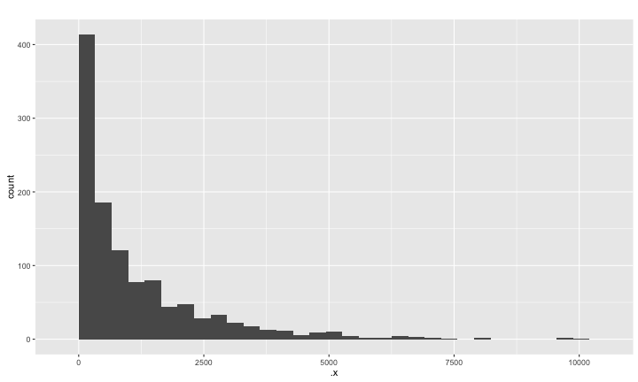
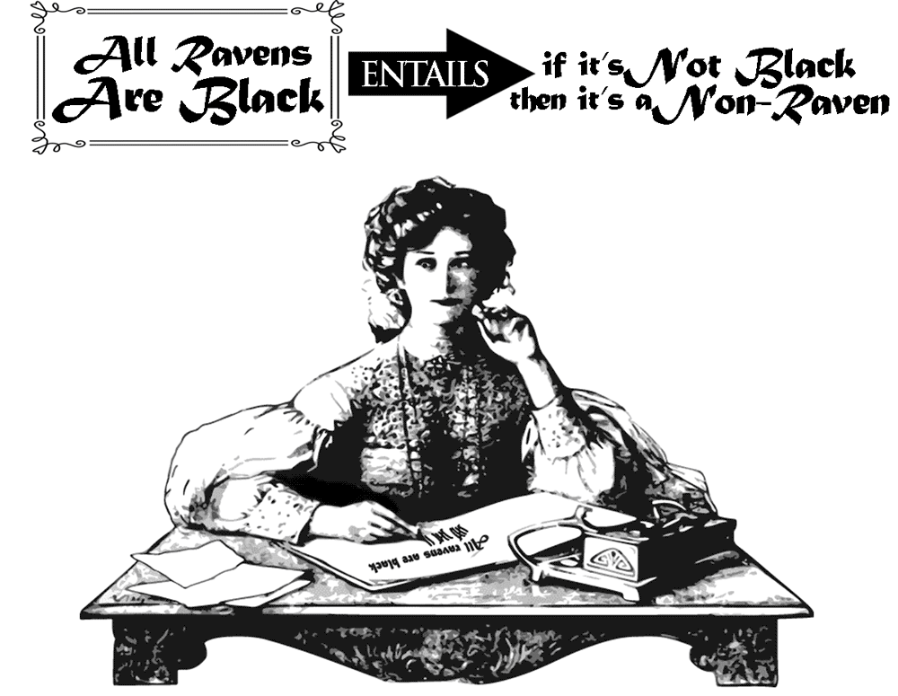
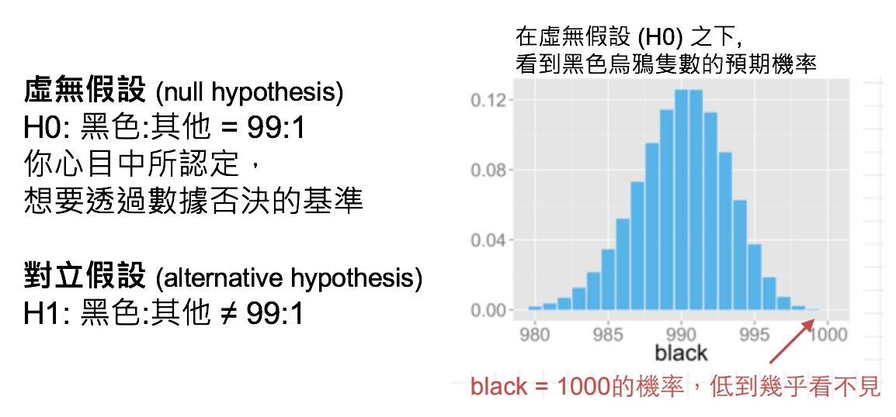

- 利用敘述性指標與圖表來觀察：
- 資料的正確性
- 資料的脈絡
- 可能的因果關係
- 可能的進階分析方向
- 進階分析技術的假設是否正確
- 可能的分析工具
- 未來的數據收集方向
統計與實務
Wush Wu and Johnson Hsieh
探索性資料分析
敘述性統計指標
- 類別形變數
- 次數：相對次數、絕對次數
- 數值形變數
- 中心位置
- 分散程度
柏克萊大學申請入學資料
計算次數
計算次數
計算次數
興光里綜合所得稅所得總額
| 鄉鎮市區 | 村里 | 納稅單位 | 綜合所得總額 | 平均數 | 中位數 | 第一分位數 | 第三分位數 | 標準差 | 變異係數 |
|---|---|---|---|---|---|---|---|---|---|
| 文山區 | 興光里 | 1142 | 1314969 | 1151 | 729 | 409 | 1400 | 1461.17 | 126.9 |
單位：金額(千元)
- (中心位置)平均: 1151, 中位數: 729
- (分散程度標準差: 1461.17, 四分位差: 991
常態分佈 - 6 Sigma (標準差)

- 1 sigma: 68.3%, 2 sigma: 95.4%, 3 sigma: 99.7%
興光里綜合所得稅所得總額
| 鄉鎮市區 | 村里 | 納稅單位 | 綜合所得總額 | 平均數 | 中位數 | 第一分位數 | 第三分位數 | 標準差 | 變異係數 |
|---|---|---|---|---|---|---|---|---|---|
| 文山區 | 興光里 | 1142 | 1314969 | 1151 | 729 | 409 | 1400 | 1461.17 | 126.9 |
單位：金額(千元)
- 平均 - 標準差 = -310.17
- 中位數: 729
- 第三分位數 - 中位數 \(\approx\) 2 * (中位數 - 第一分位數) \(\approx\) 4 * 第一分位數
- 標準差異常的大
模擬興光里的所得總額分佈

台灣所得總額
統計圖表做探索性資料分析
- 大量做圖
- 視覺化使資料有感
- 找出重要的因子與趨勢
- 看圖說故事
- 下一步
繪圖原則
Pie Chart v.s. Bar Chart：哪一個最大？
Pie Chart v.s. Bar Chart：有沒有過半?
練習
swirl::install_course_github("wush978", "StatMLDM", "course")
- DataScienceAndR
- 03-RVisualization-01-One-Variable-Visualization
- 03-RVisualization-02-Multiple-Variables-Visualization
- 03-RVisualization-03-ggplot2
- StatMLDM
- RStatistics-01-EDA
Correlation v.s. Causation
Observation v.s. Experiment
- Observation
- 資料的收集沒有控制
- 不同欄位之間只有相關，沒有因果
- Experiment
- 控制資料的收集
- 控制可能影響的變數
- 更接近因果
歐巴馬競選網站主視覺實驗
如何優化會員註冊率？

Original trial

Family trial
歐巴馬競選網站主視覺實驗 - 原始資料 (示意)

歐巴馬競選網站主視覺實驗 - 實驗結果

關於A/B Testing
- 何謂AB測試?
- AB測試如何運作?
- AB測試為什麼該做？
何謂AB測試

AB測試如何運作

AB測試為什麼該做
- 免窮理：don't necessarily know 'what works'
- 講證據：don't guess anymore
- 很簡單：don't have to be complicated or difficult to run
- 更經濟：don't have to cost a lot of money
AB測試基本原則

如何證明「烏鴉都是黑的」(Hempel 1945)
這個假設不會因為看見一隻黑色的烏鴉而獲得證明,
不管看到多少隻黑色的烏鴉,都無法證明這個假設。

與犯錯妥協

處理犯錯
- 控制犯錯的機率
- 「事前」決定接受5%、1%或更小的犯錯機率
- 計算「出現觀測值（或更糟）的機率」
- 「更糟」的定義取決於假設與檢定目標
- 如果機率值比我們設定的犯錯機率更低 => 表示當初的假設是錯誤的

假設檢定的觀念 (testing hypothesis)
引進機率的概念,以「絕大部份」取代「所有」。
假設黑烏鴉跟其他顏色的烏鴉比例是 99 : 1,
你已經觀察到1000隻黑色烏鴉了, 在99:1的假設下,連續看到1000隻黑色烏鴉的機率是\(0.99^{1000} < 0.0001\),這個機率稱 p值。

檢定統計量(Ｔ值)

T統計量與P值

假設檢定的限制
- 只能證明$H_0$為假, 不能證明$H_1$為真
- 當不拒絕時，不代表$H_1$為錯
更多實務案例
商品陳列也有A/B Testing
陳列畫面影響商品價值實驗
情境1. 用來裝飾房間的中國結
http://goo.gl/qxijE8
整齊的中國結

凌亂的中國結
陳列畫面影響商品價值實驗
情境2. 用來做課堂拆解練習的中國結
http://goo.gl/qxijE8
整齊的中國結
凌亂的中國結
提升慈善捐款的A/B Testing
哪種策略更能刺激捐款？

幫助法院討債的A/B Testing
討債簡訊如信寫？
 https://goo.gl/yMe9jO
https://goo.gl/yMe9jO
練習時間
- 請同學跟著老師完成：
- RStatistics-02-MonteCarlo
- RStatistics-03-AB-Testing
A/B Test 不只這樣...
實驗的成本
- 時間成本（實驗要多久？）
- 金錢成本（要多少樣本？）
多重檢定
- 提早結束條款會影響準確度
- 如果預期一次實驗犯錯的機率是
5% - 多次實驗犯錯的機率會超過
5%
- 如果預期一次實驗犯錯的機率是
正常檢定：控制犯錯的機會
result <-
sapply(1:1000, function(i) {
x <- rnorm(100)
y <- rnorm(100)
t.test(x, y)$p.value < 0.05
})
table(result)
result
FALSE TRUE
962 38
提早拒絕：犯錯的機會失控
result <-
sapply(1:1000, function(i) {
x <- rnorm(100)
y <- rnorm(100)
for(j in 20:100) {
if (t.test(head(x, j), head(y, j))$p.value < 0.05) return(TRUE)
}
FALSE
})
table(result)
result
FALSE TRUE
736 264
檢定水準怎麼訂？
5%是常用的門檻，但是合理嗎？- 重要性很大、不容易被推翻的實驗，顯著水準應該更小
- 需要快速結果的實驗、能夠一直review的實驗，顯著水準可能可以大一點
實驗會出錯
我們能接受錯誤嗎？
我們能接受這樣的錯誤嗎？
- Knight Capital的故事：在45分鐘之內，每一秒燒17萬美元的程式錯誤
- 城市一定會寫錯，但是我們如何處理這件事情？（就如同投影片一定會寫錯字）
錯誤的影響
- 浪費成本（金錢與時間）
- 降低產出
- 丟工作
如何避免錯誤
外在：由小而大
- 先從小資料開始做
- 資料量越大、分析量越大、錯誤的成本就越大
- 大量實驗
外在：紀律
- 程式碼的錯誤可以透過軟體工程方法來降低
- 有大發現之前要檢查三遍
- 所有報告都是互相討論而出
- 溝通、溝通、溝通
- 多多review
- 接受同事間的質疑
內在：自我要求
- 我們都是彼得杜拉克口中的知識工作者
- 實際的工作細節，只有我們自己才能管理
- 為自己的信用負責
- 一次錯誤不代表什麼
- 多次錯誤代表某些事情...